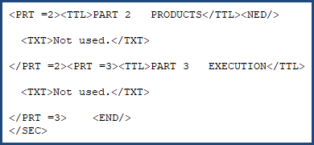
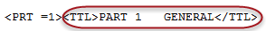
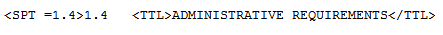
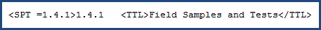
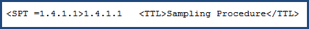

SpecsIntact conforms to the Construction Specification Institute's (CSI) standard three-part format. A comprehensive understanding SpecsIntact's core Section structure and its automated functionalities is essential for accurate project execution. While some specific rules may vary, the fundamental principles remain consistent.
The SpecsIntact tagging structure enforces the format requirements established by the Tri-Agency (Army, Navy, and Air Force) as documented in the Unified Facilities Guide Specifications (UFGS) Format Standard (UFS 1-300-02).
Each Section begins with the following standard information enclosed by the beginning and ending tags:
| Element | Tags | Description |
| Section | <SEC> </SEC> | This tag encompasses the entire Section file. |
| Section Meta Data | <MTA> </MTA> | Contains information for Submittal Formatting and Paragraph Numbering. The tags are not visible when tags are hidden. |
| Section Header | <HDR> </HDR> | Found at the beginning of each Section, this area defines the origin of the specification, Section Number, Section Date (superseding and change information), Preparing Activity, and Reference information. |
| Section Number | <SCN> </SCN> | The Section Number designates its Division, Broad Scope, Medium Scope, Narrow Scope, and in some cases, Agency. |
| Section Title | <STL> <STL> | Each Section has a title that describes the content. The length of the title can be no more than 120 characters. |
| Section Date | <DTE> </DTE> | The Section Date represents the date on which it was created or last revised, including the change number and date (e.g., CHG 2: 11/20). To learn more, refer to the SI Editor's Help menu > UFGS Changes / Revisions topic. |
Parts
All Sections are divided into three Parts: GENERAL, PRODUCTS, and EXECUTION. These Parts are not subject to automatic renumbering.
Definitions
| Title | Description |
| PART 1 GENERAL | Covers specific administrative and procedural requirements unique to the Section. |
| PART 2 PRODUCTS | Describes the quality of items required for the Job. |
| PART 3 EXECUTION | Details preparatory actions and explains how the products outlined in PART 2 are to be used in the Job. |
Exceptions
Section format for Divisions 00 and 01 differs slightly from the Sections within the other Divisions.
- Sections in Division 00 may have Subpart Titles longer than one (1) line.
- Sections in Division 00 and 01 do not require the standard three-part format, but the PART and Subpart tags must be used if the Table of Contents and Renumbering functions are to be utilized. If one or more of the parts are not used, they must be handled by placing "Not used." at the beginning of the Paragraph text as illustrated below:

PART Titles are handled differently from the Articles, Paragraphs, and Subparagraphs. Parts are enclosed within Title (TTL) tags and begin with the word PART, followed by the Part Number, three spaces, and Title, where titles for Articles, Paragraphs, and Subparagraphs only contain the title itself. The auto-generated number and three spaces will appear between the Subpart (SPT) tag and Title (TTL) tag.
Title Numbering for a PART

Title Numbering for an Article (as illustrated), Paragraph, and Subparagraph

Subparts
Each of these PARTS is further divided into five Subpart levels.
ARTICLE
The first Subpart (SPT) level is known as an Article. An Article number consists of the PART Number (either 1, 2, or 3) followed by a period and an Article number. In addition, the title must be UPPERCASE and surrounded by Title (TTL) tags.
Level 1 Subpart, otherwise referred to as an Article
Paragraph
The second Subpart (SPT) level is known as a paragraph -- adding a period and a number. In addition, the title must be in Title Case and surrounded by Title (TTL) tags.
Level 2 Subpart, otherwise referred to as a Paragraph

Subparagraphs
The third through sixth level subparts follow the same numbering outline, known as subparagraphs -- adding a period and a number for each level within. In addition, the title must be in Title Case and surrounded by Title (TTL) tags.
Level 3-5 Subpart, otherwise referred to as a Subparagraph

Other Formatting Elements
Below the Part, Article, Paragraphs, and Subparagraphs (referred to as subparts), you can use the following elements:
|
Button and Keyboard Shortcut |
Tag |
Description |
| Item | ||
| Item with -0.33 Indentation to create a hanging indent | ||
| List | ||
| List with -0.33 Indentation to create a hanging indent | ||
| Formatted Table | ||
| Text |
For tagging elements that can be used within the Text, Item, Item Indent, List, List Indent, and Tables, refer to the SpecsIntact Tags.
Additional Learning Tools
 Watch the SI Editor and Section Structure Overview eLearning module within Chapter 3 - Editing.
Watch the SI Editor and Section Structure Overview eLearning module within Chapter 3 - Editing.